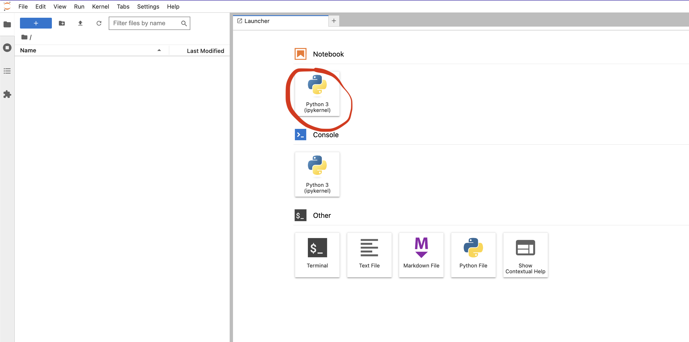
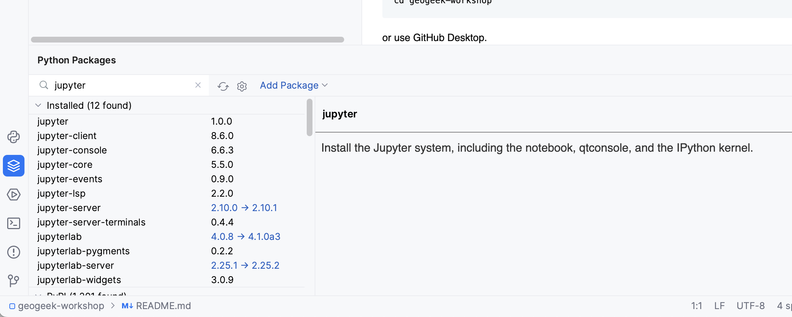
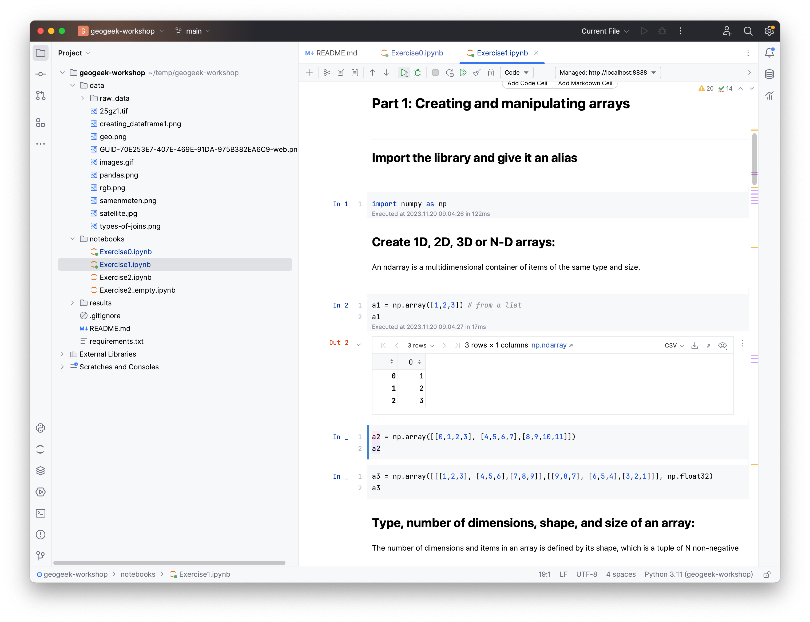
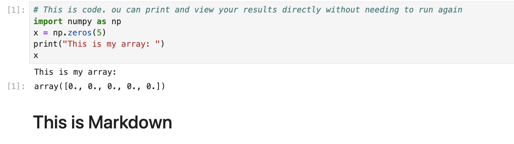
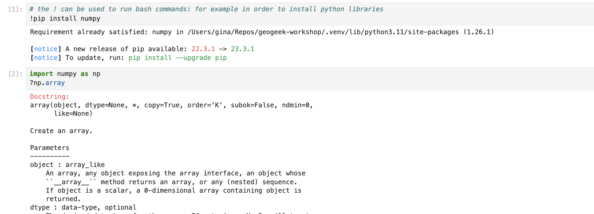

Jupyter Lab & Notebooks¶
If you are working with Python, a great way to develop your code efficiently, especially when performing data analysis or creating proof-of-concepts, is to use Jupyter notebooks. Here we are showing you how to do this through Jupyter lab, which is a web-based, interactive development environment that includes Jupyter notebooks.
How to install & launch¶
In your terminal, you can use pip to install Jupyter Lab packages.
Then you can launch the application with:
This will start Jupyter Lab in your internet browser (eg Firefox/Chrome/Safari). On the left panel you can navigate through your files and directories. The right panel is the Launcher; from here you can start a notebook, as shown below.

Warning
This does not not with the free version of PyCharm (Community Edition). You need the Professional Edition (free for students).
In PyCharm, open a project where you have one or more *.ipynb files and then install "jupyterlab" and "jupyter" packages:

and then you can simply run press Run/Play to run the cell that is currently selected, and you can select the one you want with the mouse.

How to work with a notebook¶
Within the new notebook, you can write small blocks of code in separate cells and run them individually by pressing SHIFT+ENTER. You can move cells around and collapse them, plot graphs and images and you can even add Markdown cells to document your process.

Info
The biggest advantage of the notebook is that you do not need to rerun parts of code that might be time-consuming (eg loading a large TIF file). Once a cell is run, its state is preserved and subsequent cells can be changed and run independently.
As shown below, you can use a exclamation mark to run bash commands (for example for installing a new python module to your environment) and a question mark to see some information about you functions an variables.
